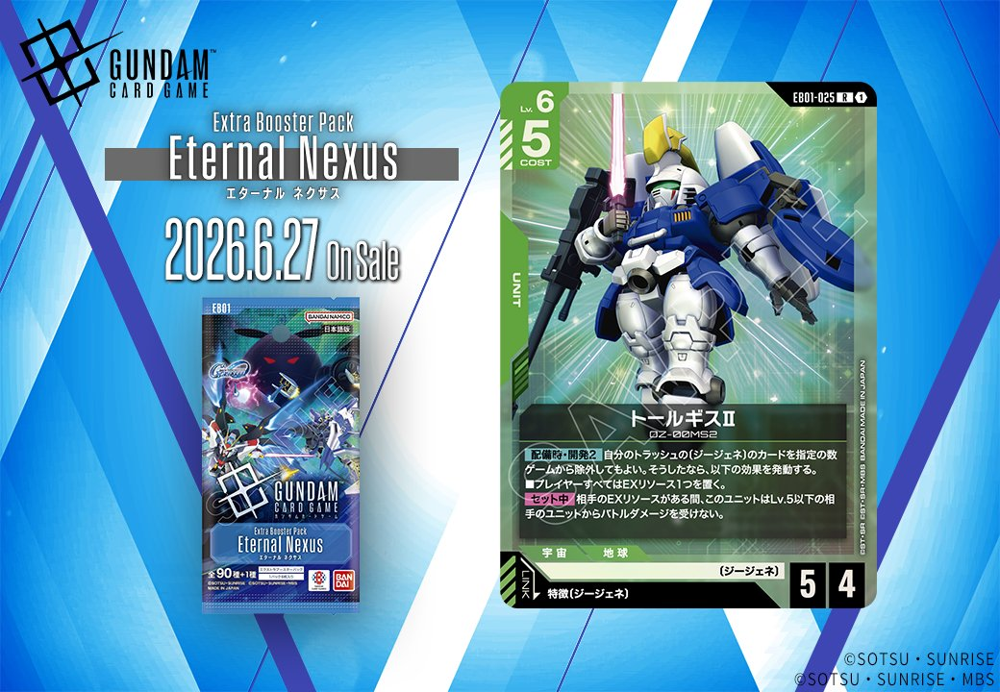

今回は、拡張パック「Eternal Nexus」から登場する緑色のカード2枚を分析します。メイア・シヴァ（EB01-065）とトールギスII（EB01-025）は、どちらも〔ジージェネ〕特徴に関連するリンク条件を持つカードとして収録されます。

メイア・シヴァ (EB01-065)
| 色 | 緑 | タイプ | PILOT |
| Lv | 4 | コスト | 1 |
| 補正 AP | 1 | 補正 HP | 2 |
| 特徴 | 〔ジージェネ〕、〔攻撃型〕 | ||
| リンク条件 | 特徴(〔ジージェネ〕) | ||
効果: 【バースト】このカードを手札に加える。【リンク中】〔ジージェネ〕の味方のユニット1つを選ぶ。このターン中、それは《突破(1)》を得る。
メイア・シヴァ (EB01-065)は、バーストで手札に加えられるPILOTカードで、リンク中に〔ジージェネ〕のユニットに《突破(1)》を付与する効果を持つ。COST1と軽く、リンク特徴も〔ジージェネ〕なので、EB01で登場した同特徴のユニット群と相性が良い。 《突破》付与によってバトル勝利時の追加ダメージを狙えるため、アグレッシブな戦術を支援するパイロットとして活躍が期待できそうだ。


トールギスII (EB01-025)
| 色 | 緑 | タイプ | UNIT |
| Lv | 6 | コスト | 5 |
| AP | 6 | HP | 5 |
| 特徴 | 〔ジージェネ〕 | ||
| リンク条件 | 特徴にジージェネを持つPILOT | ||
効果: 【配備時】・開発2 自分のトラッシュの〔ジージェネ〕のカードを指定の数ゲームから除外してもよい。そうしたなら、以下の効果を発動する。■プレイヤーすべてはEXリソース1つを置く。【セット中】 相手のEXリソースがある間、このユニットはLv.5以下の相手のユニットからバトルダメージを受けない。
トールギスII (EB01-025)は、配備時に開発2でトラッシュの〔ジージェネ〕を除外することで双方にEXリソースを与える特殊なLv.6ユニット。自身はセット中、相手にEXリソースがある限りLv.5以下のユニットからのバトルダメージを無効化できるため、相手に与えたEXリソースを逆手に取った防御性能を発揮する。緑の〔ジージェネ〕パイロットとリンク可能で、コスト5でAP6/HP5と標準的なスペックながら、独特のリソース操作と防御効果の組み合わせが面白い設計となっている。


関連カード
-
 クィン・マンサ (オメガ・サイコミュ起動時)(EB01-024)NEW緑系 — 同色・共通特徴: ジージェネ（新カード）
クィン・マンサ (オメガ・サイコミュ起動時)(EB01-024)NEW緑系 — 同色・共通特徴: ジージェネ（新カード） -
 レイジ(EB01-066)NEW緑系 — 同色・共通特徴: ジージェネ（新カード）
レイジ(EB01-066)NEW緑系 — 同色・共通特徴: ジージェネ（新カード） -
 ビルドストライクガンダム(フルパッケージ)(EX)(EB01-021)NEW緑系 — 同色・共通特徴: ジージェネ（新カード）
ビルドストライクガンダム(フルパッケージ)(EX)(EB01-021)NEW緑系 — 同色・共通特徴: ジージェネ（新カード） -
 ガンダムエクシア(EX)(EB01-022)NEW緑系 — 同色・共通特徴: ジージェネ（新カード）
ガンダムエクシア(EX)(EB01-022)NEW緑系 — 同色・共通特徴: ジージェネ（新カード） -

トールギスII(EB01-025)NEW緑系 — 同色・共通特徴: ジージェネ（新カード） -
 メイア・シヴァ(EB01-065)NEW緑系 — 同色・共通特徴: ジージェネ（新カード）
メイア・シヴァ(EB01-065)NEW緑系 — 同色・共通特徴: ジージェネ（新カード） -
 ユウ・カジマ(EB01-072)NEW白系 — リンク対象（ジージェネ PILOT）（新カード）
ユウ・カジマ(EB01-072)NEW白系 — リンク対象（ジージェネ PILOT）（新カード） -
 マーク・ギルダー(ST10-012)NEW白系 — リンク対象（ジージェネ PILOT）（新カード）
マーク・ギルダー(ST10-012)NEW白系 — リンク対象（ジージェネ PILOT）（新カード） -
 開発経路図の解放(ST10-014)NEW青系 — リンク対象（ジージェネ PILOT）（新カード）
開発経路図の解放(ST10-014)NEW青系 — リンク対象（ジージェネ PILOT）（新カード） -
 イオ・フレミング(EB01-063)NEW白系 — リンク対象（ジージェネ PILOT）（新カード）
イオ・フレミング(EB01-063)NEW白系 — リンク対象（ジージェネ PILOT）（新カード）